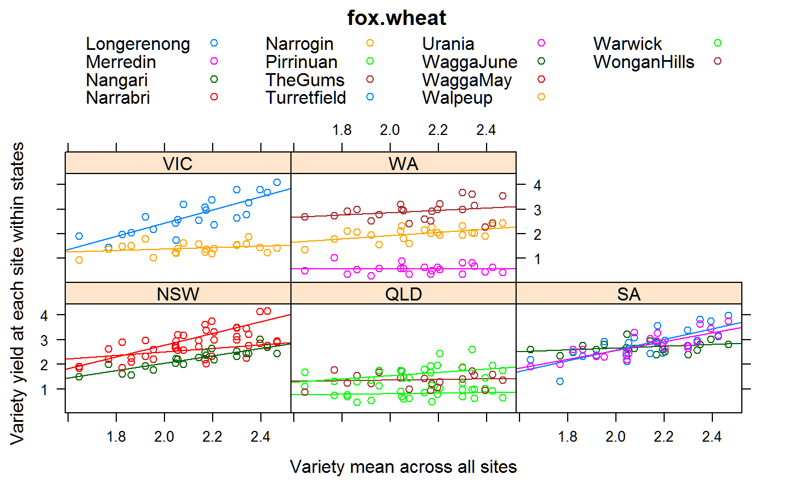

fox.wheat.RdWheat yields of 22 varieties at 14 sites in Australia
data("fox.wheat")
A data frame with 308 observations on the following 4 variables.
gengenotype/variety factor, 22 levels
sitesite factor, 14 levels
yieldyield, tonnes/ha
statestate in Australia
The 1975 Interstate Wheat Variety trial in Australia used RCB design with 4 blocks, 22 varieties in 14 sites. Wagga is represented twice, by trials sown in May and June.
The 22 varieties were a highly selected and represent considerable genetic diversity with four different groups. (i) from the University of Sydney: Timson, Songlen, Gamenya. (ii) widely grown on Mallee soils: Heron and Halberd. (iii) late maturing varieties from Victoria: Pinnacle, KL-21, JL-157. (iv) with Mexican parentage: WW-15 and Oxley.
Fox, P.N. and Rathjen, A.J. (1981). Relationships between sites used in the interstate wheat variety trials. Australian Journal of Agricultural Research, 32, 691-702.
Electronic version supplied by Jonathan Godfrey.
library(agridat) data(fox.wheat) dat <- fox.wheat # Means of varieties. Slight differences from Fox and Rathjen suggest # they had more decimals of precision than shown. tapply(dat$yield, dat$gen, mean)#> 64-WO-2-22 64-WO-2-29 8/20/09 Eagle Gamenya Halberd Heron #> 2.046429 2.298571 2.466429 2.053571 1.767857 2.043571 1.861429 #> JL-157 KL-21 MM/68/1 MMC/21/9 Oxley Pinnacle QX-333 #> 2.167143 2.195000 2.204286 2.338571 2.394286 1.919286 1.822143 #> RAC-185 RAC-255 RAC-88 Songlen Timson WW-11B WW-15 #> 2.349286 2.141429 2.299286 1.952143 1.645000 2.172143 2.425000 #> WW-97-2 #> 2.077143# Calculate genotype means, merge into the data genm <- tapply(dat$yield, dat$gen, mean) dat$genm <- genm[match(dat$gen, names(genm))] # Calculate slopes for each site. Matches Fox, Table 2, Col A. m1 <- lm(yield~site+site:genm, data=dat) sort(round(coef(m1)[15:28],2), dec=TRUE)#> siteLongerenong:genm siteWaggaMay:genm siteTurretfield:genm #> 2.67 2.41 2.18 #> siteUrania:genm siteWaggaJune:genm siteNarrabri:genm #> 1.80 1.50 0.72 #> siteNarrogin:genm siteWarwick:genm siteWonganHills:genm #> 0.68 0.65 0.46 #> siteNangari:genm siteWalpeup:genm siteTheGums:genm #> 0.36 0.31 0.15 #> sitePirrinuan:genm siteMerredin:genm #> 0.10 0.00# Figure 1 of Fox libs(lattice) xyplot(yield~genm|state, data=dat, type=c('p','r'), group=site, auto.key=list(columns=4), main="fox.wheat", xlab="Variety mean across all sites", ylab="Variety yield at each site within states")